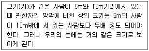
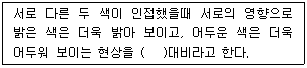
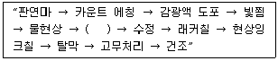
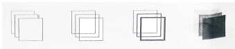
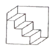
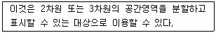
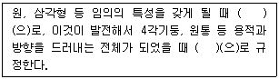

시각디자인산업기사 (2013-03-10 기출문제)
1과목: 색채학
1. 다음 중 색채의 특성을 이해하는데 가장 기본적인 것은?
- 색채 조화론
- 색의 공감각
- 색의 3속성
- 색의 대비
(정답률: 96%)

2. 먼셀 색체계에서 주요 5색상은?
- R, Y, G, B, P
- R, Y, G, B, O
- YR, GY, BG, PB, PK
- YR, GY, BG, PB, RP
(정답률: 95%)
3. 다음과 관계된 지각현상은?

- 동화효과
- 항상성
- 잔상
- 푸르킨예 현상
(정답률: 66%)
4. 유리컵과 같은 투명체 속의 일정한 공간이 꽉 차있는 듯한 부피감을 주는 색은?
- 표면색
- 공간색
- 투과색
- 광원색
(정답률: 85%)
5. 다음 가법혼합의 결과 중 가장 명도가 높은 색은?
- 파랑(B)과 녹색(G)을 혼합한 색
- 녹색(G)과 빨강(R)을 혼합한 색
- 파랑(B)과 빨강(R)을 혼합한 색
- 빨강(R)과 검정(K)을 혼합한 색
(정답률: 73%)
6. 먼셀의 색채조화 원리에 대한 설명으로 틀린 것은?
- 평균명도가 N5가 되는 색들은 조화된다.
- 중간 정도 채도의 보색은 동일 면적으로 배색할 때 조화를 이룬다.
- 명도는 같으나 채도가 다른색들은 조화를 이룬다.
- 명도가 다른 두 색과 두 색 보다 어두운 명도의 색은 조화를 이룬다.
(정답률: 52%)
7. 다음 중 한국의 전통 오정색과 그 상징의 연결이 틀린 것은?
- 청색-동쪽, 청룡, 인
- 흑색-북쪽, 현무, 지
- 적색-남쪽, 주작, 예
- 백색-중앙, 봉황, 신
(정답률: 79%)
8. 다음 제품 색채에 관한 내용 중 틀린 것은?
- 유행색은 주기적으로 바뀌는 경향이 있다.
- 색채디자인에서 시장조사는 필수적이다.
- 소비자가 원하는 이미지를 색채로 나타내는 것이 좋다.
- 제품의 기능은 색채와 관계가 없으므로 그 시기에 유행하는 색을 선택하면 된다.
(정답률: 86%)
9. 다음 지지털 이미지에 대한 설명 중 틀린 것은?
- 1bit 이미지는 흑, 백으로 이루어진 이미지이다.
- RGB 형식에서 Red 색은 8bit로 이루어진다.
- 16bit 이상의 색채 이미지를 Full color 이미지라고 한다.
- GIF 이미지 형식은 256단계의 색으로 구성된다.
(정답률: 67%)
10. 현대 상품의 색채 마케팅 특징은 일반적으로 어디에 가장 많은 비중을 두는가?
- 물리적 기능보다 심리적 기능
- 물리적 기능보다 생리적 기능
- 심리적 기능보다 물리적 기능
- 심리적 기능보다 생리적 기능
(정답률: 86%)
11. 다음 색맹(色盲)에 관한 설명 중 옳은 것은?
- 전색맹(全色盲)은 추상체의 기능은 이쏘 간상체의 기능은 없다.
- 망막의 염증이나 이탈은 선척적 색맹과 연관이 있다.
- 전색맹(全色盲)은 명암의 판단만 가능하다.
- 색각이상(色覺異常)은 색맹과는 상관없다.
(정답률: 69%)
12. 다음 중 여름 의상으로 가장 적합한 색은?
- 핑크색
- 흰색
- 흑색
- 베이지색
(정답률: 83%)
13. 다음 ( )의 내용으로 옳은 것은?

- 색상
- 채도
- 명도
- 동시
(정답률: 88%)
14. 빨간색을 본 다음에 노란색을 볼 때, 노란색이 황록색을 띠어 보였다. 이러한 대비 현상은?
- 채도대비
- 명도대비
- 동시대비
- 계시대비
(정답률: 88%)
15. 다음 중 어떠한 혼합으로도 만들 수 없는 원색이 아닌 것은?
- Red
- Yellow
- Blue
- Purple
(정답률: 93%)
16. 저드(D.B.Judd)의 색채 조화론의 친근성(familiarity)의 원리에 대한 내용으로 틀린 것은?
- 숙지의 원리라 하며 보는 사람에게 익숙한 배색은 조화한다는 원리이다.
- 자연을 색채조화론의 지표로 하는 베졸트, 브리케, 루드 등의 주장과 공통된다.
- 오스트발트 색체계에서의 셰도우의 시리즈는 그 대표적인 예이다.
- 색 공간 내부의 규칙적인 선이나 원 위에서 선정된 어떠한 색도 조화한다는 원리이다.
(정답률: 53%)
17. 다음 중 색상 때문에 일어나는 대비현상이 아닌 것은?
- 보색대비
- 채도대비
- 계시대비
- 면적대비
(정답률: 78%)
18. 유사색상 배색의 특징은?
- 동적이다.
- 자극적인 효과를 준다.
- 부드럽고 온화하다.
- 대비가 강하다.
(정답률: 91%)
19. 문.스펜서의 색채조화 이론에서 조화의 내용이 아닌 것은?
- 입체의 조화
- 동류의 조화
- 유사의 조화
- 대비의 조화
(정답률: 82%)
20. 색채의 삼속성 중 명도와 채도를 통합한 개념을 무엇이라 하는가?
- 순도
- 색도
- 색조
- 휘도
(정답률: 55%)
2과목: 인쇄 및 사진기법
21. 흑백필름에서 네거티브의 경우 저감도 유제층과 고감도 유제층으로 구분하여 도포되어 있는 주된 이유는?
- 관용도를 높이기 위하여
- 해상력을 낮추기 위하여
- 입상성을 높이기 위하여
- 감광성을 낮추기 위하여
(정답률: 60%)
22. 필름은 현상으로 색조(농도, 콘트라스트, 계조)를 조정할 수 있다. 이때 조정 사항과 가장 거리가 먼 것은?
- 현상실내의 습도
- 현상시간의 조절
- 현상액의 선택
- 현상액의 희석도
(정답률: 67%)
23. 필터의 노출 배수(필터계수)에 변화를 주는 요인이 아닌 것은?
- 광원의 성질
- 카메라의 종류
- 피사체의 조건
- 필름의 감광도
(정답률: 78%)
24. 절단분할이 끝난 인쇄지를 손 또는 접지기로 페이지 순서가 되도록 하는 제책공정은?
- 쪽맞추기
- 딴쪽접기
- 접기
- 나눔절단
(정답률: 48%)
25. 다음은 PVA 감광액의 평오목판 제판 공정이다. ( )에 가장 적합한 공정은?

- 노출
- 양극산화처리
- pH 조정
- 부식
(정답률: 48%)
26. 식물성 기름을 불완전 연소시켜 얻은 무기안료로서 색상이 뛰어난 안료는?
- 퍼머넌트 그린
- 벤지딘 옐로
- 카본블랙
- 리솔레드
(정답률: 70%)
27. 필름을 사용하지 않고 인화하는 방법으로 투명체, 반투명체, 불투명체 등의 물체를 인화지 위에 직접 올려놓고 인화하는 기법은?
- 포토그램
- 디포메이션
- 포토 몽타즈
- 더블 프린트
(정답률: 62%)
28. 다음 중 문자의 크기가 전혀 다른 것은?
- 1/4mm
- 1급
- 1치
- 1point
(정답률: 77%)
29. 자동초점 카메라에 대한 설명 중 틀린 것은?
- 대부분의 자동초점 카메라는 파인더 상의 원하는 피사체에 초점을 맞출 수 있다.
- 대부분 촬영거리에 따라 초점을 맞추는 존 포커스(zone focus)방식이다.
- 자동초점 카메라는 렌즈교환이 되지 않는다.
- 초점조절은 셔터버튼을 누르면 전류가 흘러 카메라가 자동으로 거리를 측정한다.
(정답률: 96%)
30. 인쇄의 5대 요소가 아닌 것은?
- 판
- 인쇄잉크
- 피인쇄체
- 작업자
(정답률: 97%)
31. 속장과 표지를 연결하는 부분으로 표지가 속장에서 떨어지는 것을 방지하는 역할을 하는 공정은?
- 면지붙이기
- 장합
- 실매기
- 다듬재단
(정답률: 78%)
32. 다음 중 인쇄망점 재현성과 가장 관계가 없는 종이의 물성은?
- 종이의 압축성
- 종이의 다공성
- 종이의 평활성
- 종이의 신축률
(정답률: 73%)
33. 현상주약의 화학적 반응은?
- 잠상의 환원
- 잠상의 산화
- 가시상의 환원
- 가시상의 산화
(정답률: 53%)
34. 개성있는 분위기를 묘사하며, 볼륨감과 입체감을 강조하기 위해 인물사진 활영에 이용되는 가장 대표적인 광선은?
- 렘브란트 라이트
- 버터플라이 라이트
- 스플릿 라이트
- 라인 라이트
(정답률: 61%)
35. 잉크의 전이특성을 검사하기 위해 아트지의 표면거치름을 분석하고자 한다. 다음 중 적합하지 않은 실험기기는?
- Laser Beam을 이용한 비접촉식 Stylus측정기
- 평활도 측정기(Smoothness Tester)
- 거칠음 측정기(Roughness Tester)
- 촉점식 표면측정기
(정답률: 58%)
36. 국제적 감광도 표시 방법은?
- DIN
- BSI
- JIS
- ISO
(정답률: 83%)
37. 연속 계조의 사진화상을 복사하도록 만든 필름이며, 리스용 현상액으로 처리하면 망점이 있는 네거티브를 얻을 수 있는 인쇄 제판용 특수 필름은?
- 콘튜얼라인 필름
- 오토스크린 필름
- 슬라이드 필름
- 적외선 필름
(정답률: 34%)
38. 다음 중에서 반사율이 가장 높은 것은?
- 적색 반사판
- 회색 반사판
- 은색 반사판
- 검정색 반사판
(정답률: 85%)
39. ISO 400 인 필름으로 F16, 1/125 초로 촬영하려 한다. 다음에서 같은 노출값은?
- ISO 100 F11, 1/125초
- ISO 200 F8, 1/125초
- ISO 800 F16, 1/250초
- ISO 1600 F11, 1/500초
(정답률: 62%)
40. 정착은 되지 않았으나 질산은과 염화은을 사용하여 최초로 카메라 옵스큐라에 의해 화상기록을 시험한 사람은?
- 슐츠(Schulze)
- 다게르(Daguerre)
- 웨지우드(Wedgewood)
- 니엡스(Niepce)
(정답률: 45%)
3과목: 시각디자인론
41. 아래 보기 그림에 대한 설명이 틀린 것은?

- 공통적으로 중첩배열을 적용하였다.
- 같은 크기에 명도를 달리하면 공간감을 줄 수 없다.
- 같은 크기에 선의 굵기를 달리하면 공간감이 발생한다.
- 보는 사람의 공간적인 판단, 경험과 습득된 정보로 지각한다.
(정답률: 69%)
42. 경영이념, 경영상의 방침, 계획, 사회적 책임감이나 사명 등을 주체로 하는 광고는?
- PR
- PROPAGANDA
- PUBLICITY
- DM
(정답률: 53%)
43. 제품디자인에서 디자인 매니지먼트로서의 디자인 평가 기준과 거리가 먼 것은?
- 기능성
- 경제성
- 시대성
- 시설성
(정답률: 71%)
44. 미국의 기호학자 퍼스(Peirce)가 제시한 세가지 유형의 일반적 기호가 아닌 것은?
- 도상(Icon)
- 지표(Index)
- 로고(Logo)
- 상징(Symbol)
(정답률: 40%)
45. 바우하우스(Bauhaus)에 대한 내용으로 틀린 것은?
- 바이마르 미술대학과 바이마르 공예학교가 합병한 국립디자인대학이다.
- 초대 학장은 건축가인 헤르만 무테지우스이다.
- 바이마르-뎃사우-베를린으로 이동하며 14년간 존속했다.
- 바우하우스의 어원은 바우휘테로서 중세 건축 장인집단이라는 의미이다.
(정답률: 48%)
46. 다음 그림에서 느껴지는 착시현상은?

- 반전실체의 착시
- 간결화의 착시
- 대비의 착시
- 수직 수평의 착시
(정답률: 73%)
47. 모듈러(Modular)에 대한 설명으로 틀린 것은?
- 르 코르뷔지에가 고안하였다.
- 황금척도라고도 한다.
- 기준이 된 사람의 신장은 약 183cm이다.
- 기준의 된 사람의 배꼽 높이는 135cm이다.
(정답률: 45%)
48. 다음 중 도면에 대한 설명을 틀린 것은?
- 입체도에는 정투상도, 사투상도, 투시도 등 세가지 주요 분류가 있다.
- 정투상도에서는 물체의 한 면이 화면과 평행하게 된다.
- 평면 사투상도, 입면 사투상도가 사투상도에 속한다.
- 투시도는 화면에 각기 다른 각도에서 선들이 그려져 하나의 소점에 모인다.
(정답률: 27%)
49. 수정궁(Crystal palace)과 관계있는 박람회는?
- 필라델피아 백년제
- 영국의 대산업박람회
- 드레스덴 국제박람회
- 파 리 대박람회
(정답률: 62%)
50. 아르누보 양식의 특징이 아닌 것은?
- 19세기 동안 디자인 흐름을 지배했던 역사주의로부터의 탈피
- 일본의 장식 디자인과 목판 인쇄 등에서 영향을 받음
- 포도덩굴, 꽃과 새, 여성의 모습 등이 주요 모티브
- 기능주의 표현주의를 표방하여 공업생산에 적합한 형태임
(정답률: 44%)
51. 다음 중 시각디자인의 영역이 아닌 것은?
- 포장 디자인(Package Design)
- 프로덕트 디자인(Product Design)
- 비쥬얼 디자인(Visual Design)
- 그래픽 디자인(Graphic Design)
(정답률: 75%)
52. 다음에서 설명하는 내용과 관계있는 것은?

- 점
- 선
- 면
- 입체
(정답률: 65%)
53. 제도에서 숨은선의 용도로 사용되는 것은?
- 파선
- 쇄선
- 가는 실선
- 가는 이점 쇄선
(정답률: 71%)
54. 미술공예운동과 관계가 깊은 것은?
- 존 러스킨과 예술 민주화 사상
- 피에트 몬드리안과 데스틸
- 막스 에른스트와 다다이즘
- 리시츠키와 구성주의
(정답률: 57%)
55. 다음 ( )에 올바른 용어는?

- 형(Shape), 형태(Form)
- 매스(Mass), 톤(Tone)
- 배경(Ground), 볼륨(Volume)
- 형태소(Morpheme), 공간(Space)
(정답률: 95%)
56. 디자인의 공리(公理)로서 "형태는 기능을 따른다"고 말한 사람은?
- 빅터 파파넥
- 하버트 리드
- 루이스 설리반
- 윌리암 모리스
(정답률: 69%)
57. 다음 설명 중 투시도(Perspective)의 구성요소가 아닌 것은?
- 정점(SP : station point)은 관찰자의 눈의 위치로 투시선들은 이 점으로 모인다.
- 가상원추(CV : cone of vision)는 관찰자가 바라보는 시각의 범위를 말한다.
- 시선(DV : direction of vision)은 관찰자가 보는 시각의 방향을 말한다.
- 소점(VP : vanishing points)의 개수는 투시도의 종류와 사물의 각도, 형태 또는 환경을 결정하며 투시도의 깊이감을 부여한다.
(정답률: 37%)
58. 아르누보 운동의 발상지라 할 수 있는 국가는?
- 프랑스
- 벨기에
- 독일
- 영국
(정답률: 35%)
59. 대상을 지각할 때 일정불변하게 지각되지 않고 심리상태, 과거의 기억, 관심, 주의, 흥미 등이 복합된 활동에 좌우된다는 형태 지각의 심리 이론은?
- 워트 하이머의 그루핑
- 게슈탈트 이론
- 루빈의 이론
- 뮬러, 라이어 이론
(정답률: 83%)
60. 디자인의 어원인 데시그나레(designare)에 내포된 본래 의미는?
- 기술, 기능
- 형태, 색상
- 시각, 환경
- 계획, 설계
(정답률: 60%)
4과목: 시각디자인실무 이론
61. 그래픽 심볼에 대한 개념이 틀린 것은?
- 시각 심볼이라고 부른다.
- 새로운 의사 전달내용을 정확하고 빠르게 할 수 있는 수단이라고 볼 수 있다.
- 시각전달의 기능을 목적으로 하고 있다.
- 시멘토그래피(semanto graphy)는 그래픽 심볼의 범위에 속하나 사인(sign), 아이소타입(ISOTYPE)은 속하지 않는다.
(정답률: 75%)
62. 다음 중 4P 요소에 해당되는 것은?
- Product, Price, Place, Promotion
- Product, Position, Promotion, Process
- Product, Price, Package, Promotion
- Product, Position, Planning, Process
(정답률: 73%)
63. CIP(corporate image identity program)에 대한 설명으로 틀린 것은?
- 기업이미지 경쟁력 강화방안이다.
- 경영 기법 중에 하나이다.
- 시각적이 면에 국한된 디자인개발 전략이다.
- 다이어그램의 사용은 지각을 확장시킨다.
(정답률: 74%)
64. 다이어그램에 관한 설명 중 틀린 것은?
- 객관적인 정보의 내용을 강조한다.
- 커뮤티케이션 효과르 증대시킨다.
- 선과 그래프만을 사용하여 간결하게 표현한다.
- 다이어그램의 사용은 지각을 확장시킨다.
(정답률: 55%)
65. 다음 중 비주얼 스캔틀(Visual Scandal)을 적절히 설명한 것은?
- 광고디자인에서 시각적으로 사회 윤리적 문제가 될 수 있는 요소
- 시각디자인의 구성요소들을 불규칙적으로 배열해 놓는 방법
- 시각디자인 요소들을 기업경영방침에 맞추어 계획관리하는 방법
- 기발한 착상과 비상식적 표현으로 강렬한 시각효과를 나타내려는 기법
(정답률: 41%)
66. 다음 중 포장의 기능이 아닌 것은?
- 보존성
- 편리성
- 생산성
- 상품성
(정답률: 81%)
67. 기업의 제품개발, 광고전개, 유통설계를 중심으로 한 활동이 마케팅이다. 이것은 궁극적으로 무엇을 위한 것인가?
- 사회적 이해 증진
- 이윤 추구
- 소비자 교육
- 문화생활보급
(정답률: 85%)
68. DM의 기능 및 특징으로 틀린 것은?
- 정확한 타겟팅이 가능하여 마케팅 비용의 낭비를 방지할 수 있다.
- 커스터마이징(customizing)이 가능하다.
- 직접적인 행동을 유발할 수 있다.
- 대중 매체에 비해 경쟁사에게 자사의 전략이 상대적으로 노출될 수 있다.
(정답률: 65%)
69. 소비자의 나이와 가족생활주기는 다음의 소비자 행도에 미치는 영향 중 어디에 해당되는가?
- 심리적 요소
- 사회적 요소
- 문화적 요소
- 개인적 요소
(정답률: 65%)
70. 소비자의 욕구에 적합한 시장성 있는 상품 판매를 위해 시기, 수량, 가격결정, 판촉방법 등을 입안하고 시행하는 제품(상품)화 계획은?
- 제품디자인
- 라이프사이클
- 선회이론
- 머천다이징
(정답률: 75%)
71. 레터링에서 스페이싱(spacing)을 설명한 것은?
- 자간이 시각적으로 똑같이 보이도록 조정하는 방법
- 글자가 잘 보이도록 자간을 띄어 놓는 방법
- 문장의 행간을 넓혀서 가독성을 높이는 방법
- 글자의 크기를 서로 똑같이 배열하는 방법
(정답률: 30%)
72. 게슈탈트의 이론에서 유사성의 원리를 신문광고의 시각적 유인력에 역으로 응용한 대표적인 것은?
- 양면 광고
- 전면 광고
- 기사 중 혹은 돌출 광고
- 안내 광고
(정답률: 43%)
73. 시각커뮤니케이션의 3가지 구성 요소가 아닌 것은?
- 발신자
- 수신자
- 매체
- 잡음
(정답률: 97%)
74. 제품수명주기(Product Life Cycle)에 있어서 도입기에 대한 내용으로 틀린 것은?
- 마케팅 비용이 높고 매출고가 낮다.
- 시장 점유율(Market share)을 높이기 위한 투자가 필요하다.
- 시장에서 브랜드의 지위가 정착되기 시작한다.
- 투자 효율이 낮고 자금의 유출(Nagative flow)이 많다.
(정답률: 32%)
75. 다음 중 크기를 확대 또는 축소를 해도 이미지데이터의 해상도가 손상되지 않는 벡터파일 형식은?
- BMP
- TIFF
- PCX
- PCT
(정답률: 42%)
76. 다음 중 가장 작은 정보 표현 단위는?
- BIT
- BYTE
- RECORD
- WORD
(정답률: 83%)
77. 전단(傳單) 또는 핸드빌이라고도 하며 낱장으로 되어 있는 광고매체는?
- 브로슈어
- 카탈로그
- 리플릿
- 팜플릿
(정답률: 66%)
78. 중재자와 6~12명의 사람들로 구성된 집단이 한 두시간 동안 특정주제에 대하여 토론하는 조사자료 수집방법은?
- 포커스 그룹 조사
- 실험실 조사
- 관찰 조사
- 우편 설문조사
(정답률: 77%)
79. 커뮤니케이션 체계 중에서 경로를 통하여 전달되는 정보의 원활한 전달을 방해하는 현상은?
- Noise
- Media
- Explosion
- Option
(정답률: 83%)
80. 다음 중 PDF에 관한 설명으로 틀린 것은?
- 포스트스크립트 언어에 기반을 두고 있으며 적은 파일용량에 작업한 파일의 모든 정보를 포함한다.
- 파일에 사용된 폰트를 별도로 가지고 있어야 애크로뱃리더(Acrobat reader)를 통해 읽을 수 있다.
- 인터넷에서도 출력이 가능한 휴대용 문서 포맷이다.
- 파일의 생성부터 출력까지 이미지 상태를 그대로 유지시켜주며 출력 전에 모니터로 정확히 출력 상태로 볼 수 있다.
(정답률: 74%)